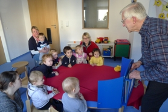
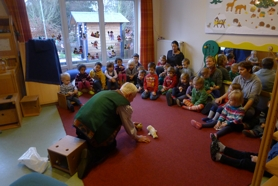
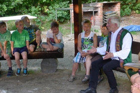
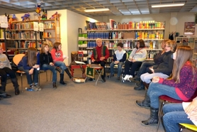
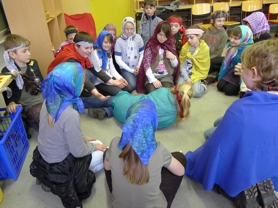
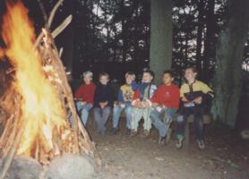

|
In der Krippe Aufmersam und unbeweglich folgen die Kleinsten der Geschichte, dem sehr vereinfachten und leicht geänderten Märchen vom furchtsamen Hühnchen. Gespannt warten sie auf das nächste Tier: Was wird noch geschehen? Fallen die Wolken auch auf deren Schwänzchen? (Bild 1) Im Kindergarten Der Erzähler wird in den aufmerksamen Bann seiner kleinen Zuhörer gezogen. Sie lachen, leiden, kämpfen und siegen mit ihren Helden, und dabei folgen sie dem Märchen mit Herz und Verstand. Grundschulkinder In allen Altersgruppen sind sie gute und aufmerksame Zuhörer. Selbst die im Unterricht oft unkonzentrierten Schüler lassen sich meist schnell in das Märchengeschehen einbeziehen. Lehrerzitat: "So ruhig möchte ich meine Klasse noch einmal erleben!" Die Märchen müssen aber nach Inhalt und Länge dem Alter entsprechen. Jugendliche Diese Altersgruppen interessieren sich für die Botschaft im Märchen und die uralten Erfahrungen der Menschen, die über Generationen weiter gelten. Zauber-, Liebes- und Pubertätsmärchen können sie in ihren Bann ziehen. Einer zunächst kritischen Distanz zum Märchen folgt bald interessiertes Zuhören. Das pantomimische Spiel Kinder und auch Erwachsene haben ihre Freude daran, sich ein wenig zu verkleiden, um dann pantomimisch zu dem erzählten Märchen zu spielen. Wo treffe ich meine Zuhörer? In der Schule, in der Bibliothek, in der Jugendherberge oder dem Schullandheim, im Zeltlager, im Wald, im Kindergarten, auf einer Geburtstagsfeier, bei den Pfadfindern am abendlichen Lagerfeuer oder im Zelt mit zünftigen Liedern um das Feuer, usw. |
      |